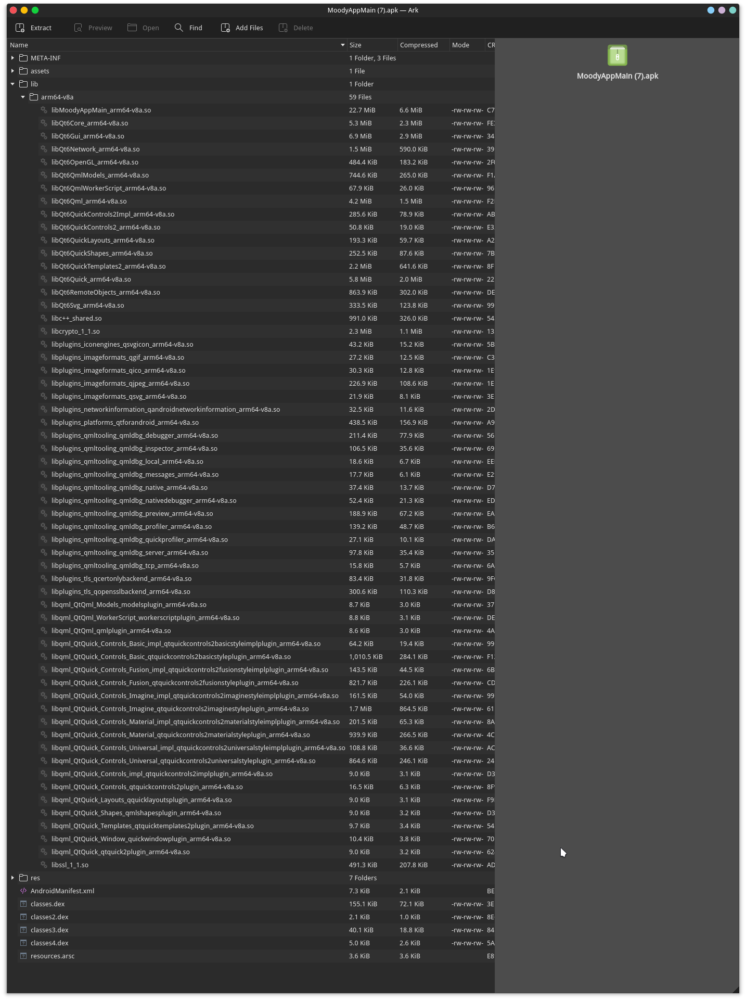
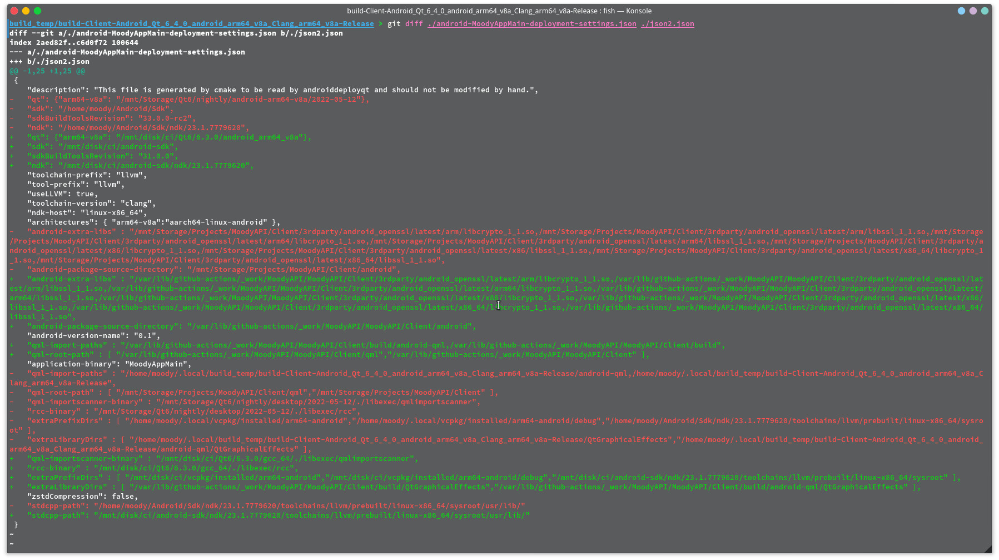
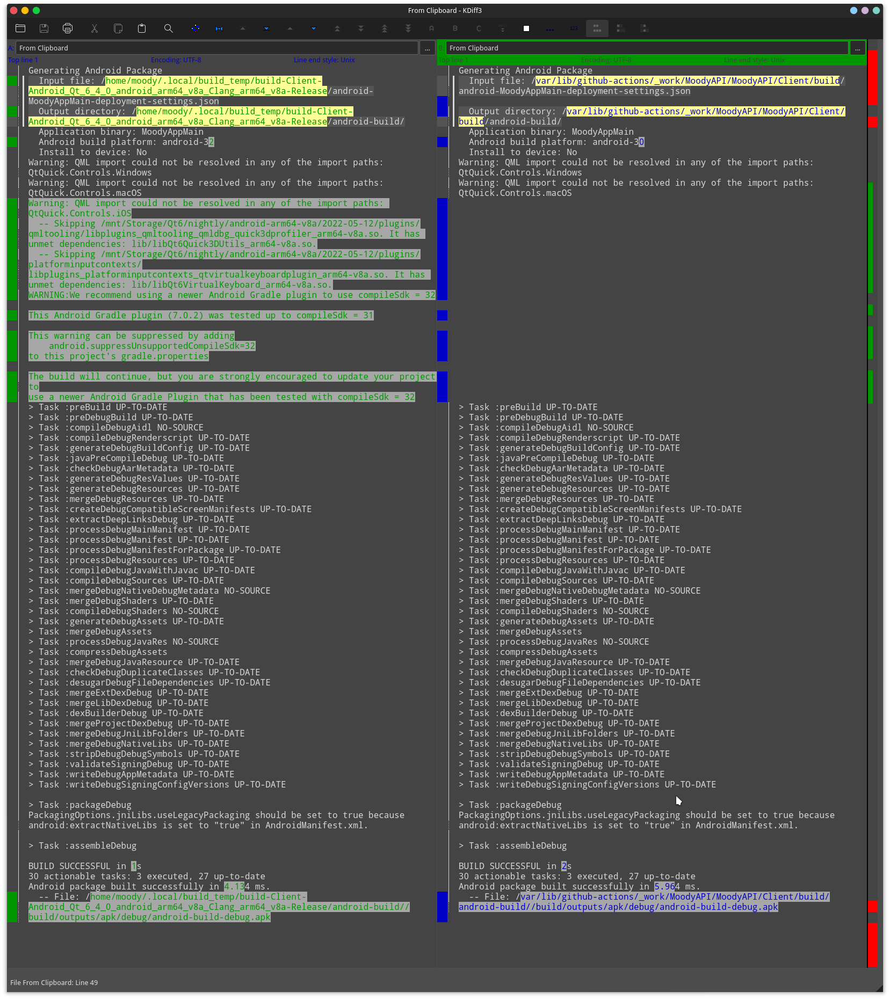
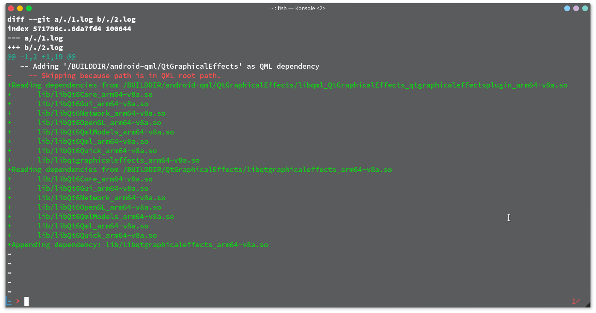

你这 androiddeployqt 可能没法正常 deploy Qt
一些无聊的概念
-
Moody’s Utility Bot 是一个与此仓库 GitHub Actions
梦幻联动的 Telegram Bot- 负责发送消息和最新 build 产物，
同时也负责提醒蔡队起来（出处：“我起来了”）
-
Qt 是 ……
- 这还用介绍吗
-
QtGraphicalEffects 是 ……
- Qt5 时期的一个 Qt module，顾名思义负责 “图形特效” 比如渐变，阴影甚至 GLSL 效果
- 但在 Qt6 中被 deprecate 了
- 但我硬是强行将其 port 到 Qt6，其实是一种 “又不是不能用” 的状态
《开端》？
2022 年 5 月 1 日凌晨 1 点 00 分 56 秒：
Moody’s Utils Bot:
Successfully built the client app, [File : MoodyAppMain.apk]
我随即下载并安装了新版 MoodyAppMain.apk，笑死，直接崩掉。
当时我心里很清楚这玩意已经炸了一个月了，从愚人节当天的 ad042600 以后就全盘裂开，但这 commit 只是简单的升级了一下 Qt 版本（622 到 630），并不应该引入新的问题。
为什么那天要迁移 Build Server？ 答：之前的编译机炸了。
因为前段时间有考试，此时（五月一号）还处于考完试疯玩期间，就并没有对此进行调查。
…………
复现
意思是这个 bug 4 月 1 号的 commit 开始出现，一直咕到现在才开始修（大概是玩够了，该老老实实把 broken build 修一修了），于是我开始重新拿起 QtCreator
首先使用 QtCreator 直接编译（我都多长时间没写过 QML 了）
-
首先我得 Build 个 Qt，或者从 Qt installer 下载一份 Qt for Android，但是我有 QtBuildScript，直接
./build-qt.fish -p android -a x86_64即可编译 Qt（什么王婆卖瓜环节） -
在等了半个小时以后，打开 QtCreator 并（从头）（重新）配置 Qt 环境（这种东西没必要赘述）
-
使用以下 CMake 参数~~（这个得记，下次要考）~~ 进行 configure 并开始 build
1 2 3-DCMAKE_TOOLCHAIN_FILE=/PATH/TO/VCPKG/scripts/buildsystems/vcpkg.cmake -DVCPKG_CHAINLOAD_TOOLCHAIN_FILE=/PATH/TO/NDK/build/cmake/android.toolchain.cmake -DVCPKG_TARGET_TRIPLET=x64-android上文 CMake 参数只适用于在 QtCreator 中使用 vcpkg 和 Android toolchain，而在命令行 中使用 qt-cmake 则需要另一个变量
也就是把
CMAKE_TOOLCHAIN_FILE换为QT_CHAINLOAD_TOOLCHAIN_FILE
随后启动 Android 虚拟机进行测试，结果 BANG
W MoodyApp: QQmlApplicationEngine failed to load component
W MoodyApp: qrc:/client/api/mooody/me/qml/main.qml:5:1: module "QtGraphicalEffects" is not installed
W MoodyApp: exit app 0
-
想起之前写过一篇
qt_add_qml_moduleCMake 函数的"详"解，但现在反过来看了看，并没有着重说明IMPORT_PATH的重要性，于是打开 Qt 文档 (dev 分支版) -
文档里说：
IMPORT_PATH可以用来添加被依赖的 QML 模块的搜索路径。这里指定的位置需要包含qmldir文件来标明此文件夹代表了一个 QML 模块。
那看来我加一个就行？在项目里添加了 IMPORT_PATH ${CMAKE_BINARY_DIR} 并重新 build，果然效果拔群！
到现在为止，程序成功地在 Android VM 中运行了。于是我又进行了一轮实体机的测试，终于成功在生产环境（一台三星手机）上成功运行起这个 APK。
最后的最后，我进行了 git push，并准备休息
就这？就这能水一篇文章？
咕了一个月的 bug 仅两行代码就能修好？
别急，本文标题所说的 androiddeployqt 还没出场呢
在 commit 的时候，我就暗自怀疑：“Is it simple like this?"，哈哈事实证明：不可能的
就在两分钟后，编译机将 CI 环境下编译完成的 APK 自动发送到了 Telegram 群，我立即安装并打开，结果竟然又闪退了
这下我人麻了，从头顶麻到脚尖。
我之前的开发过程中可都没出现过 CI 产物没法用的问题啊
刨根问底
大概不用讲道理，Android 上调试肯定得搬出 adb logcat：
26896 4836 W MoodyApp: QQmlApplicationEngine failed to load component
26896 4836 W MoodyApp: qrc:/client/api/mooody/me/qml/main.qml:5:1: module "QtGraphicalEffects" is not installed
26896 4836 W MoodyApp: exit app 0
- 这怎么和上面的 output 一模一样啊，不是修好了吗？
- 我的 QtGraphicalEffects 又去哪了？
拆包（解压）
稍微理解一些 Qt/QML 的读者可能会知道，一个 QML 模块其实对应了一个（或两个，或零个）动态库，而 Android 打包 过程中是会把这些依赖的动态库打进 APK 的。
所以为了仔细研究 APK 里的内容，我选择使用 KDE 精品压缩文件查看器 Ark 打开 APK 一探究竟：
（图很小，理论上可以直接右键看源文件）

打开源文件图片以后，就可以很清晰地看到 QtGraphicalEffects 并没有在 lib/ 文件夹内
- 啥叫 “可以很清晰地看到 xxx 没在”？
anyway
依赖的 so 没在 APK 包里，这肯定是某些 deployment 的问题
CI Log
经过对比，CMake Configure 输出和本地 build 时的输出并无区别，Qt 版本也一致，那么问题就被缩减到了 deployment 过程上。
我使用 cmake --build . --parallel --verbose 让 CMake 在 build 过程中输出详细内容，大概就是每一
步骤运行的程序，发现 Qt 在 Android 平台的 deployment 其实是一个名为 androiddeployqt 的程序进行的，
它详细的参数是：
|
|
可以明显看到传入参数是 android-MoodyAppMain-deployment-settings.json 这只 JSON
大概是本能反应？打开了本地能用的 JSON 文件进行对比：
这种玩意一般人都看不懂吧： 
整篇都是 path 不同导致的 diff，简直要命。所以我将 JSON 里的绝对路径改为了 /SOURCE, /BUILDDIR 一类的 placeholder，diff 得出以下结果：
|
|
忽略 16/18 行的顺序问题，我发现 sdk 版本出现了不一致。但在 CI 机器上安装同样版本的 Android SDK 后， build 出来的 APK 仍然不包含 QtGraphicalEffects 模块。
咋回事呢？
检查了 androiddeployqt 的参数，是不是该检查一下输出了：
似乎没有什么有意义的：

--verbose？
无意间发现 androiddeployqt 有 --verbose 选项，打开 verbose 后，事情出现了转机：

什么叫 is in QML root path，当我回去检查 android-MoodyAppMain-deployment-settings.json 时发现：
- CI 环境的 build 目录在
SOURCE/build，很明显SOURCE就是 QML root path； - 而本地开发环境，由于统一管理了 build 产物，默认的
CMAKE_BINARY_DIR位于~/.local/build_temp
这就导致 BUILDDIR/QtGraphicalEffects 在 CI 环境和开发环境处于了不同的相对位置：
- CI 环境下，位于 QML root path 子目录
- 开发环境下，反之，处于别的地方
核心问题
位于 src/tools/androiddeployqt/main.cpp:L2011 调用的 checkQmlFileInRootPaths(const Options*, const QString &) 可知：
这个函数无脑（只）检查了子目录，而并检查「即使 module 位于子目录，能否通过 import URI 导入此 module」，因此 导致 SOURCE 下的所有 QML module 都会被认为 “位于 QML import path 内”，但事实并非如此：
这个 QML import path 不会被 deploy 到 APK 里面，那自然里面的 QML module 就全丢了：）
后续
给 Qt 发了个 patch qtbase@411805，
希望能帮上忙，但说实话我也不确定是否应该这样修
结语
睡觉，晚安